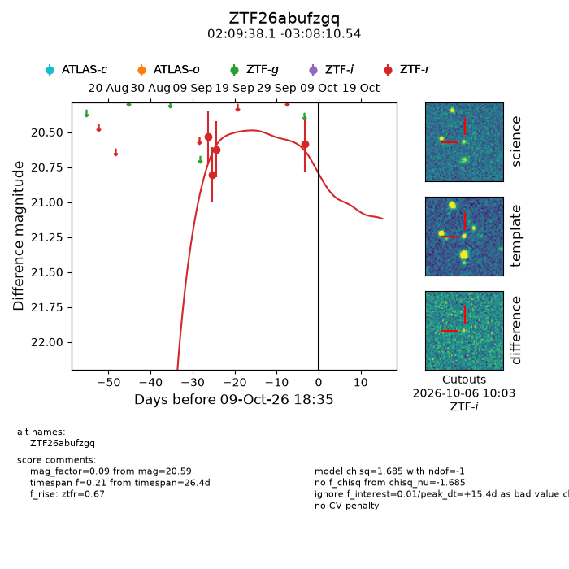
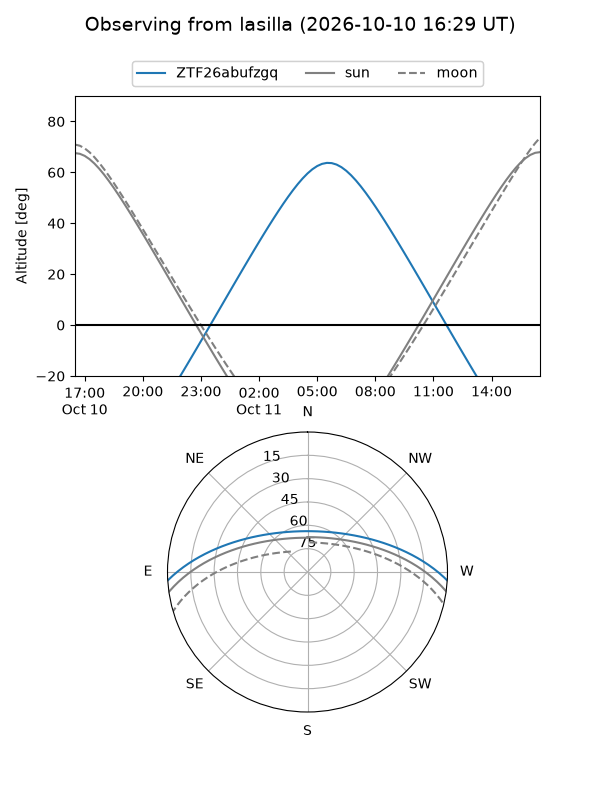
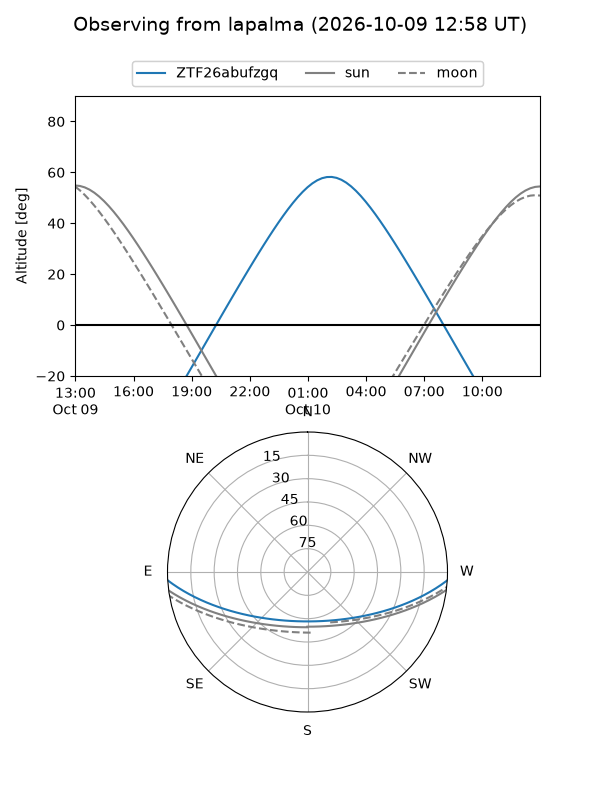
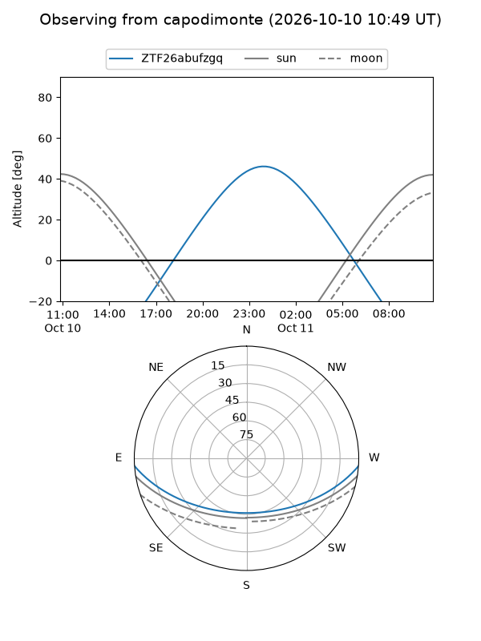
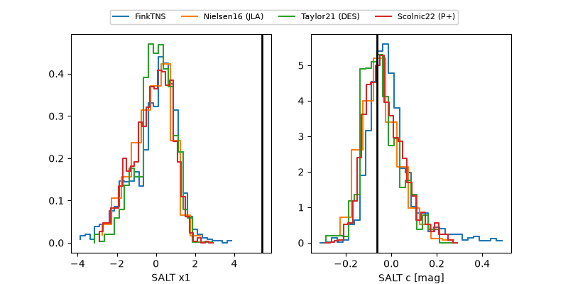

ZTF26abufzgq
Target ZTF26abufzgq at 2026-10-09 18:36
Aliases and brokers:
FINK-ZTF: ztf.fink-portal.org/ZTF26abufzgq
Lasair-ZTF: lasair-ztf.lsst.ac.uk/objects/ZTF26abufzgq
ALeRCE-ZTF: alerce.online/object/ZTF26abufzgq
Direct TNS query: direct search
alt names
ZTF26abufzgq (ztf,fink_ztf)
Coordinates:
equatorial (ra, dec) = 32.4088,-3.13626
equatorial (HMS+DMS) = 02:09:38.12,-03:08:10.54
galactic (l, b) = (164.2286,-59.58426)
Flags:
peak dt: +15.4
Photometry:
last ztfr=20.59
4 ztfr detections
Lightcurve

Visibility



Additional plots
